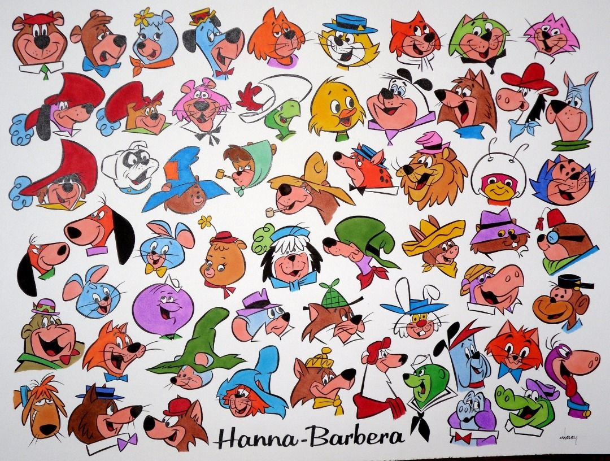

ANIMACION TRADICIONAL
La animación tradicional, es aquella en la que cada fotograma se dibuja individualmente, generando así la representación del movimiento. Los personajes y escenarios poseen solo 2 dimensiones X y Y, la sensación de profundidad se logra a partir del manejo de la perspectiva, el color, etc.
También se usa el término dibujo animado para denominar a las películas o series de televisión, estas últimas de episodios en general de corta duración, realizadas con esta técnica (o que simulan estar dibujadas a mano), aunque también se siguen proyectando como largometrajes en los cines, y se ven cada vez más en pantallas de computadora, mediante Internet.
ANIMACION LIMITADA
La animación limitada es una técnica de animación que simplifica los movimientos, descomponiéndolos en varios niveles. Este sistema permite acortar los tiempos y costos de producción de una serie animada
Este tipo de animacion, originalmente fue utilizda por el estudio de animacion
Hanna Barbera, que en los años 60s
estaban en busqueda de un metodo de hacer financiable la animacion en television
este tipo de animacion, suele cortar esquinas a la hora de la produccion y
que le permiten producir contenido de manera más veloz, entre los ejemplos
mas comunes de utilizacion de esta técnica, se encuentran gran parte de series
televisivas y animes. Tambien se le ah llamado radio visual a este tipo de
animacion ya que esta muy centtrada en el dialogo de personajes con pequeños momentos
de animacion.
|

|

|